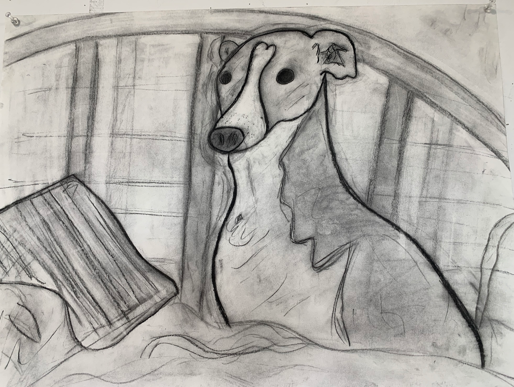
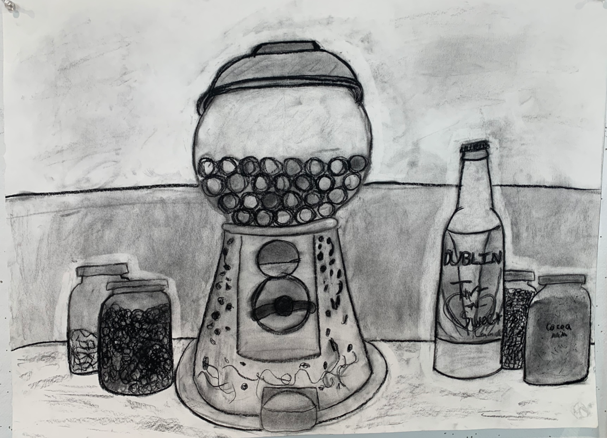
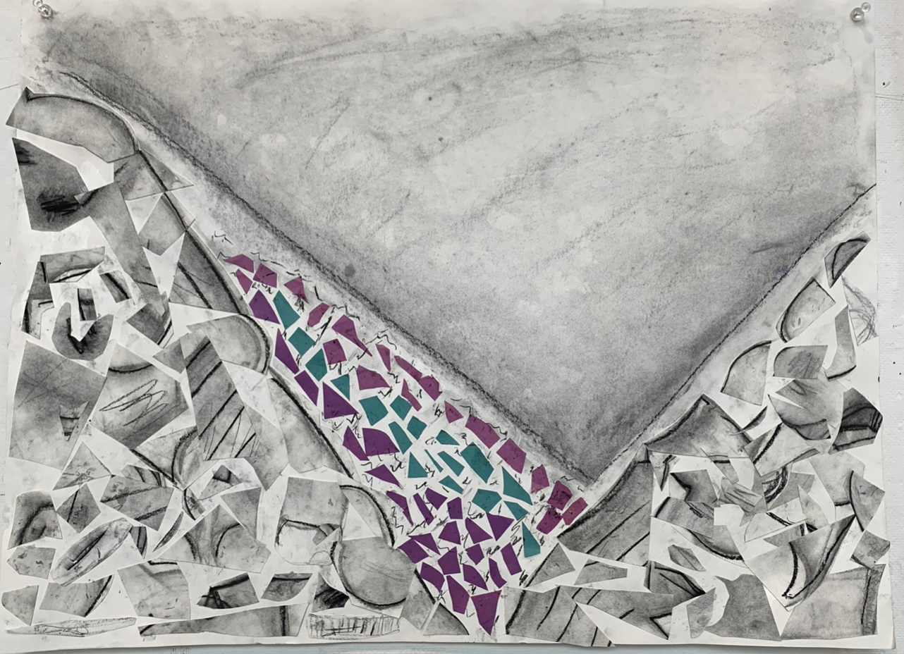
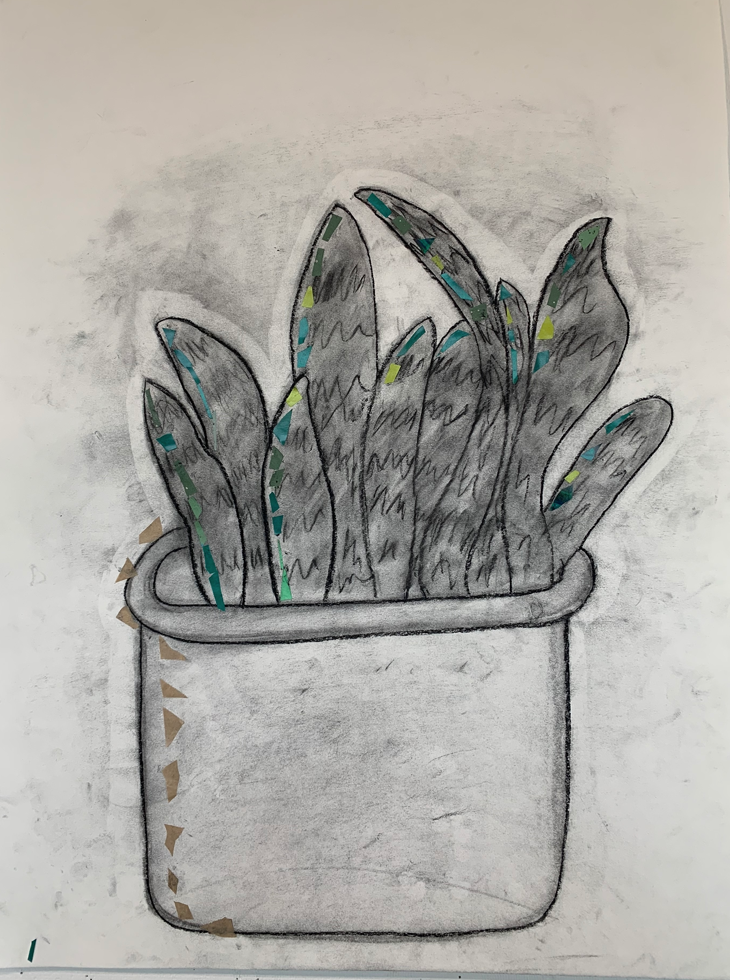
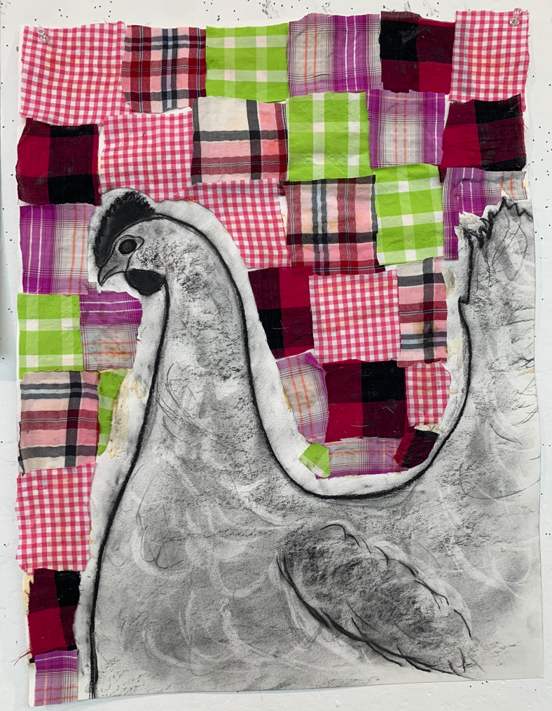

Charcoal Series: Home



 
Artist Statement:
These pieces are drawn with charcoal. A few of them have additional added materials.
Each one of them has a personal connection with me that reminds me of home in some way.
The image on the top left corner is the most abstract. It can be interpreted in a number of ways.
The colored section was originally intended to be water with rocks on either side that are made up
of the pieces of various drawings that I cut apart, but can be looked at in many different ways.
The image on the top right was inspired by a picture of my dog sitting on my bed. The bottom left image
is inspired by a gumball machine that my brother and I received as a gift, and various bottles that we have
in my family’s home. The plant in the bottom right corner is inspired by a plant in my home. It is lined with
brown paper on the bottom and green paper along the leaves. The chicken drawing on the bottom right is surrounded
by scraps of flannel fabric. The fabric is cut from flannel shirts that I would wear when I was younger.
This piece is a tribute to my childhood, and specifically the memory of going on field trips to a chicken
farm when I was in elementary school.
Back